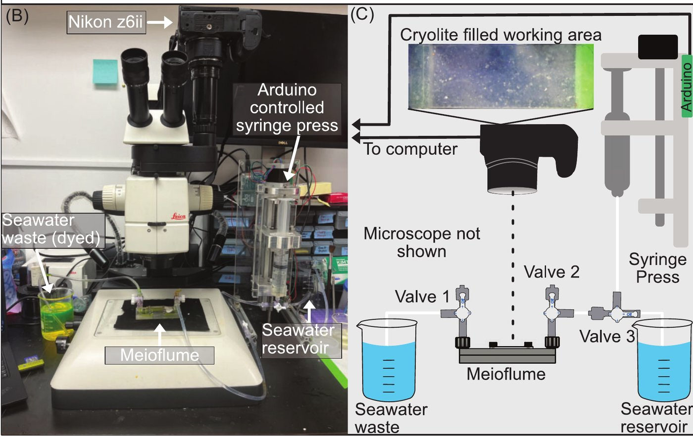
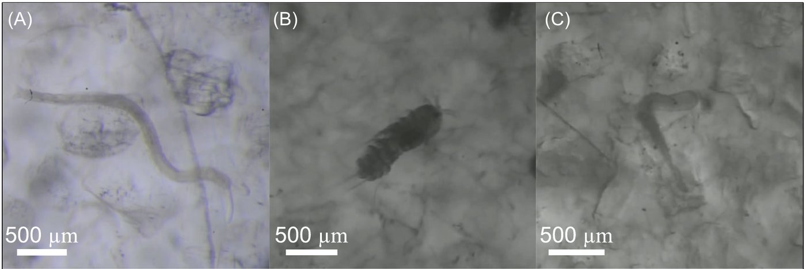

Tool 01
The Meioflume
Meiofauna live inside sand, where water seeps through the spaces between grains. Sand is opaque, so their behavior there has rarely been watched directly.
The Meioflume is a small flow chamber, packed with sand that turns transparent underwater, that sits on a microscope stage. It gives a see-through patch of seafloor with controlled porewater flow.

Rendered from the CAD model
How it works
p. 003-BThe chamber is three pieces of clear acrylic, milled on a CNC router and bolted together, 7.6 cm long and 2.5 cm wide. Water enters at one end, spreads out through a flow-widening chamber, and crosses a working area 28.6 mm long, 10.2 mm wide, and 1 mm deep. Mesh screens (100 µm) at each end keep animals and grains from washing out.
The working area is filled with cryolite, a mineral whose refractive index is close to that of seawater, so it nearly disappears when wet. An Arduino-controlled syringe press pushes seawater through at flow rates from 0.0001 to 1 mL/s, covering the porewater speeds found in natural sands. Packed cryolite has a porosity of about 39%, within the range of natural marine sands (38 to 46%).
Cryolite is no longer mined and is hard to find, so other transparent substrates (Nafion, hydrogels, 3D-printed resin, or PDMS casts) could take its place.

Ballentine & Dorgan 2024, Integrative Organismal Biology
Drag to rotate, scroll or pinch to zoom.

Ballentine & Dorgan 2024, Integrative Organismal Biology
What it shows
p. 003-CAnimals placed in the Meioflume can be filmed moving through the cryolite before and after flow starts. In early trials, a copepod began burrowing almost as soon as water started moving, a protodrilid worm turned and headed downward, and a flatworm paused briefly, then carried on.
in progress: how gastrotrichs ("hairy bellies") respond to flow

Ballentine & Dorgan 2024, Integrative Organismal Biology
Build your own
p. 003-DThe CAD model and parts list are free on GitHub. Parts: 1/4" clear acrylic (body), 1/16" clear acrylic (lid), two quick-turn tube couplings, two three-way stopcock valves, four 6-32 stainless socket head screws, and high-vacuum grease.
Read more
the paper behind this page- 2024Ballentine W.M., Dorgan K.M. The Meioflume: a new system for observing the interstitial behavior of meiofauna. Integrative Organismal Biology 6(1): obae016. doi:10.1093/iob/obae016